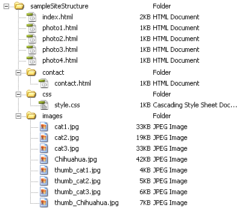

Get started by placing your files from last week on your desktop
Week 3: File paths, links, and thinking about structure
First, box review.
Go to depaul.edu Search for "Box for Students" and follow along.
Thinking About Boxes
HTML File Paths and Links

Let's take a look at the File Path Examples from Week 3 in D2L